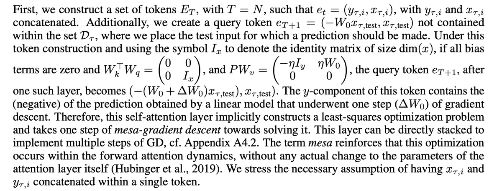

Self-Attention Mimicking Gradient Descent

This section of paper Uncovering mesa-optimization algorithms in Transformers presents a theoretical construction where a linear self-attention layer in a Transformer architecture can mimic a single step of gradient descent for a linear regression task.
Token Construction (from the paper):
- Tokens: A set of tokens \(E_T\) is constructed with \(T = N\) such that \(e_t = (y_{\tau,i}, x_{\tau,i})\), where \(y_{\tau,i}\) and \(x_{\tau,i}\) are concatenated.
- Query Token: A query token \(e_{T+1}\) is created as \(e_{T+1} = (-W_0 x_{\tau,\text{test}}, x_{\tau,\text{test}})\) . This token represents the test input for which a prediction is to be made.
Why doing \(-W_0 x_{\tau,\text{test}}\) ? \(W_o\) represent the model’s initial weights, multiplying it with \(x_{\tau,\text{test}}\) provides initial context for prediction (basically giving a perspective to start with). The \(-_(ve)\) sign is to align with the GD update, where we move in the direction opposite to the gradient. So we can say that The initial negative prediction in the query token provides a starting point, and the self-attention mechanism’s update to this prediction results in a new prediction that mimics
Conditions (from the paper):
All bias terms are zero
- basically only using the model weights without any bias term
\[ W^T_k W_q = \begin{bmatrix} 0 & 0 \\ 0 & I_x \end{bmatrix} \]
- As per my understanding, the relevance of this condition depends is as following
So, I’ll write the equations for calculating attention weights and they are self-explanatory to be honest (also this is my fav interpretation of this condition)
\[ e = \begin{bmatrix} y_1 \\ x_1 \\ x_2 \end{bmatrix} \\ \text{ and }q = \begin{bmatrix} q_y \\ q_{x1} \\ q_{x2} \end{bmatrix} \]
\[k = W_k e\]
\[q' = W_q q\]
\[\text{attention weight} \propto k^T q'\]
Given the condition, this becomes: \[\text{weight} \propto e^T W^T_k W_q q\]
Now, plugging in the condition
\[W^T_k W_q = \begin{bmatrix} 0 & 0 \\ 0 & I_x \end{bmatrix}\]
the interaction simplifies to: \[ \text{weight} \propto \begin{bmatrix} y_1 & x_1 & x_2 \end{bmatrix} \begin{bmatrix} 0 & 0 & 0 \\ 0 & 1 & 0\\ 0 & 0 & 1 \end{bmatrix} \begin{bmatrix} q_y \\ q_{x1} \\ q_{x2} \end{bmatrix} \] \[ \text{weight} \propto \begin{bmatrix} 0 & x_1 & x_2 \end{bmatrix} \begin{bmatrix} q_y \\ q_{x1} \\ q_{x2} \end{bmatrix} \] \[\text{weight} \propto x_1 q_{x1} + x_2 q_{x2}\]
So what we can see here is that, the attention-weights are proportional to the dot-product of x-component of inputs and query (rejecting the influence of y-component)
- \[ P W_v = \begin{bmatrix} -\eta I_y & \eta W_0 \\ 0 & 0 \end{bmatrix}\]
This is the another condition and lets try to understand what it means, here \(\eta\) is the learning-rate, \(*P*\) is a projection matrix, and \(*W_v*\) is the weight matrix for the “values”.
Before diving into the interpretation of this condition, we should know that the Linear Self Attention can be represented as \(P V_{t} K^T_{t} q_{t}\) (considering 1 head for simplicity) here \(P\) is just the Projection matrix and the rest of the term is exact same as calculating attention.
The matrix product \(PW_v\) determines how the values contribute to the updated query token. Now lets try to understand it
In this interpretation, I’ll again try to resolve this by solving equations, since our new value_matrix is \(PW_v\) i.e we can calculate values of input token as
\[v = PW_ve\]
where \(e = \begin{bmatrix} y_1 \\ x_1 \\ x_2 \end{bmatrix}\) and \(P W_v = \begin{bmatrix} -\eta & \eta W_{01} & \eta W_{02} \\ 0 & 0 & 0\\ 0 & 0 & 0\end{bmatrix}\)
\[v = -\eta y + \eta W_{01}x_1 +\eta W_{02}x_2\]
Based on this equation we can interpret the condition as:
- The Upper Left Block \((-\eta I_y)\): This block scales the y-component of the values (the outputs) by −η. In the context of gradient descent, the update is proportional to the negative gradient. This block captures the idea that the update to our model’s prediction should be in the opposite direction of the error (difference between prediction and actual output). Multiplying by −η ensures that if our model’s prediction is too high, it gets adjusted downwards, and if it’s too low, it gets adjusted upwards.
- The Upper Right Block (\(\eta W_0\)): This block scales the x-component of the values (the inputs) and then multiplies by the initial weight \(*W_0\).* This captures the contribution of the inputs to the gradient of the loss with respect to the model parameters. In other words, it represents how much each input feature contributes to the error. Multiplying by \(*W_0*\) gives the model’s initial reliance on each feature, and the entire product indicates how the model should adjust its reliance on each feature to minimize the error.
- The Lower Blocks (0 matrices): These blocks ensure that the x-component of the updated query token remains unchanged. This is consistent with the idea that the input part of our test example doesn’t change; only our model’s prediction (or representation) of it does.
- As per my understanding, the relevance of this condition depends is as following
That covers all the required conditions, now let’s see that satisfying these conditions, how the weights of the self-attention will contain the gradient of the loss of a Linear Regression objective.
Gradient Descent in Linear Regression:
For a linear regression task, the gradient descent update rule is: \[\Delta W_0 = \eta \sum_{i=1}^{N} (y_{\tau,i} - W_0 x_{\tau,i}) x^T_{\tau,i}\]
Linear Self-Attention Layer:
Given the conditions, the self-attention mechanism computes the weighted sum of values based on the similarity (dot product) of the query with the keys.
To prove: The weights in the attention mechanism will effectively compute the gradient of the loss with respect to the model parameters.
Let’s move to the final derivation:
- Attention Weights Calculation: Given the second condition, the attention weights are determined by the dot product of the query with the keys: \[\alpha_t = q \cdot k_t\] Where \(q\) is the query, and \(k_t\) is the key for the t-th token.
- Value Update: The update to the query token using the attention mechanism is: \[e_{T+1,\text{new}} = \sum_{t=1}^{T} \alpha_t v_t\] Where \(v_t\) is the value for the t-th token.
Given the third condition, the value for each token is: \[v_t = P W_v e_t\] Substituting this in, we get: \[e_{T+1,\text{new}} = \sum_{t=1}^{T} \alpha_t P W_v e_t\]
Matching with Gradient Descent: Given the attention weights \((\alpha_t)\) and the gradient descent update rule, the y-component of the updated query token is: \[ e_{T+1,\text{new,y}} = \sum_{t=1}^{T} \alpha_t (-\eta y_{\tau,i} + \eta W_0 x_{\tau,i}) \\ e_{T+1,\text{new,y}} = \sum_{t=1}^{T} \alpha_t \eta (W_0 x_{\tau,i} - y_{\tau,i}) \]
Now, comparing this with the gradient descent update rule, we can see that the term inside the summation \((W_0x_τ,_iy_τ,_i)\) is essentially the error in prediction for the training data.
Given that the attention weights \(α_t\) effectively compute a weighted version of this error, the entire equation can be seen as a weighted sum of errors, which is analogous to the gradient in gradient descent.
Approximation:
Now, for the test input \(x_{\tau,\text{test}}\), the prediction using the initial weights \(W_0\) is \(W_0 x_{\tau,\text{test}}\). After one step of gradient descent, the prediction becomes: \[(W_0 - \Delta W_0) x_{\tau,\text{test}}\]
Given that the self-attention mechanism’s update to the query token is designed to mimic one step of gradient descent, we can approximate: \[e_{T+1,\text{new,y}} \approx (W_0 - \Delta W_0) x_{\tau,\text{test}}\]
This approximation captures the essence of the theoretical construction: the self-attention mechanism updates the query token in a way that mimics the behavior of gradient descent
Also the rearrangement and approximation are based on the insight that the self-attention mechanism’s update to the query token aligns with the gradient descent update rule for linear regression, allowing the mechanism to make predictions consistent with gradient descent optimization.